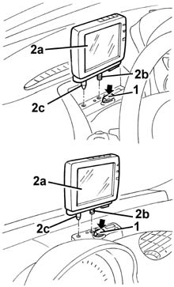

5580M14 positionable navigation system panel - r r
- Path
- Procedures > 55 ELECTRICAL EQUIPMENT > 5580 SPECIAL ACCESSORIES > 5580M om-board navigator > 5580M14 positionable navigation system panel - r r
- Kind
- repair procedure (removal / refitting; the operation number is the code)
- Applies to
- all engines; all production periods
- Interactive page
- https://sloeber94.github.io/elrnDB-fMltpl/en/#/2891997
Applies to: all engines; all production periods
 Removing
Removing
 Refitting
Refitting1. Press the button the support.
2. Remove the navigator panel (2a) releasing the retainer (2b) and the centering pin (2c).

Applies to: all engines; all production periods
Refitting
RemovingCheck that the navigator panel is not damaged.
Position the navigator panel, then engage the centering pin and the retainer.
Check that the navigator panel is working properly.